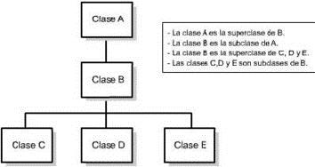

Determinar los aspectos abarcados por el proyecto como fijar aquéllos aspectos que no se incluirán en el proyecto. Estos últimos han de indicarse explícitamente. Si es necesario, se puede especificar todo aquello que se posponga hasta una versión posterior del sistema.

Con recursos ilimitados (tiempo y dinero), casi cualquier proyecto se podría llevar a buen puerto. Por desgracia, en la vida real los recursos son más bien escasos, por lo que no todos los proyectos son viables.

Siempre se produce algún contratiempo que eche por tierra la mejor de las planificaciones. Es algo inevitable con lo que hemos de vivir y para lo cual disponemos de una herramienta extremadamente útil: la gestión de riesgos, que tradicionalmente se descompone en evaluación de riesgos y control de riesgos.

La programación orientada a objetos (POO, u OOP según sus siglas en inglés) es un paradigma de programación que viene a innovar la forma de obtener resultados. Los objetos manipulan los datos de entrada para la obtención de datos de salida específicos, donde cada objeto ofrece una funcionalidad especial. ver más
Un objeto contiene toda la información que permite definirlo e identificarlo frente a otros objetos pertenecientes a otras clases e incluso frente a objetos de una misma clase, al poder tener valores bien diferenciados en sus atributos.
Una clase se puede definir de las propiedades y comportamiento de un tipo de objeto concreto. La instanciación es la lectura de estas definiciones y la creación de un objeto a partir de ella.
La abstracción es una especificación del sistema que enfatiza sobre algunos de los detalles o propiedades del mismo mientras suprime a otros. Una buena abstracción es aquella que enfatiza sobre detalles significativos al lector y al usuario y suprime detalles que son al menos por el momento irrelevantes o que causan distracción.

Es la cualidad de restringir el acceso y ocultar el proceso de cada uno de los datos miembro de una clase y sólo podrán cambiar mediante las operaciones definidas para ese espacio. El aislamiento protege contra la modificación y garantiza el flujo del programa. Una clase y un método funcionan como cápsula. En una pantalla, nosotros solo vemos la imagen, y no conocemos lo que se procese dentro,
Es la propiedad de que unos objetos sean creados a partir de otros ya existentes en proporción a una relación entre una clase general y una más específica.
En la imagen se puede apreciar una superclase llamada Animales, que describe todos aquellos objetos animados clasificados como seres vivos, las subclases se encuentran en el segundo nivel y denotan características más específicas de los animales por su hábitat, estructura ósea, alimentación, etc. En la clase Acuáticos, podremos apreciar dos subclases, Ríos y Océanos. Un animal de Ríos tendrá las características de un animal Acuático heredando las características de la superclase Animal.
Es la capacidad de crear objetos con diferentes formas donde la clase se comporta como una entidad donde puede procesar diferentes valores durante la ejecución del programa.

Es la capacidad de nombrar dos o más métodos con el mismo identificador pero definidas para diferentes propósitos. Lo único que hará la diferencia, son los parámetros que reciba
Consiste en dividir el programa en fracciones más pequeñas de código de nombre módulos. Cada módulo debe ser independiente de otro.
Es una propiedad que permite ordenar las abstracciones.
Una instancia es la declaración de un medio por el que se accederán a los datos miembro permitidos de una clase desde fuera de ésta. Un objeto es una instancia de una clase y se pueden tener muchas al mismo tiempo con características propias.
| Nombre del alumno |

Chantes Morales Monserrat |
| Semestre y Grupo | 4º "H" |
| Submodulo | Desarrolla Aplicaciones Móviles |
| Nombre del Docente | Lic. José Antonio Gómez Hernández |
| Actividad | app10-Proyecto Final |
| USUARIO ver ejemplo |
|
| TECNICO ver ejemplo |
1. Índice
Relación de los capítulos y páginas correspondientes que forman parte del documento
2. Introducción.
Se debe presentar una breve descripción del sistema desarrollado, que contemple el ámbito abarcado, cual es su función principal y un detalle de las funciones macros o partes que lo componen. Puede incluir un mensaje de la máxima autoridad de las áreas comprendidas en el manual.
2.1. Objetivo general del sistema
Se debe de describir el objetivo general del sistema.
2.2. Objetivos específicos
Se deben describir brevemente los objetivos específicos que se cumplieron con el desarrollo del sistema.
3. Contenido técnico
3.1. Definición de reglas del negocio implementadas en el sistema desarrollado.
3.2. Diagramas de flujo de datos, junto con su respectivo diccionario de datos.
3.3. Controles de auditoria implementados en el sistema.
3.4. Descripción de campos requeridos por pantalla con presentación de pantallas.
3.5. Diagrama de navegación del sistema.
3.6. Requerimientos de interfase con otros sistemas.
3.7. Modelo lógico de datos, diagrama entidad-relación.
3.8. Modelo de datos físico, junto con su respectivo diccionario de datos.
3.9. Matriz de procesos versus organización.
3.10. Matriz de programas versus entidades.
3.11. Plataforma de usuario. Aquí se describen los requerimientos mínimos que se deben tener tanto de hardware como de software para que el sistema se pueda instalar y ejecutar correctamente (en caso de que se considere necesario).
3.12. Áreas de aplicación y/o alcance de los procedimientos. Esfera de acción que cubren los procedimientos
4. Responsables.
4.1. Mapa de navegación. muestra de forma gráfica la interconexión entre cada una de las pantallas del sistema, lo que serviría para saber como llegar a determinada parte de la aplicación. En este se muestran los menús, submenús y pantallas a las que nos lleva cada uno de ellos
4.2. Descripción gráfica del mapa de navegación. En el anterior aparece de forma de diagrama de flujo y en esta sección deberá aparecer ya con las respectivas pantallas.
4.3. Describe paso a paso los procesos, así como pantallas, botones, cuadros de texto, etc., pero también se muestra el código de cada rutina, pantalla, botón, etc. es decir, se muestra lo que hay detrás de la interfaz del usuario
|

 2
2 3
3 5
5 7
7


 1
1 2
2 4
4 5
5 6
6 7
7 8
8